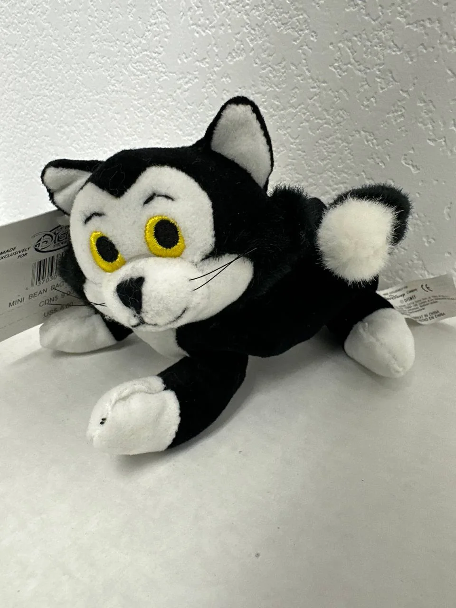
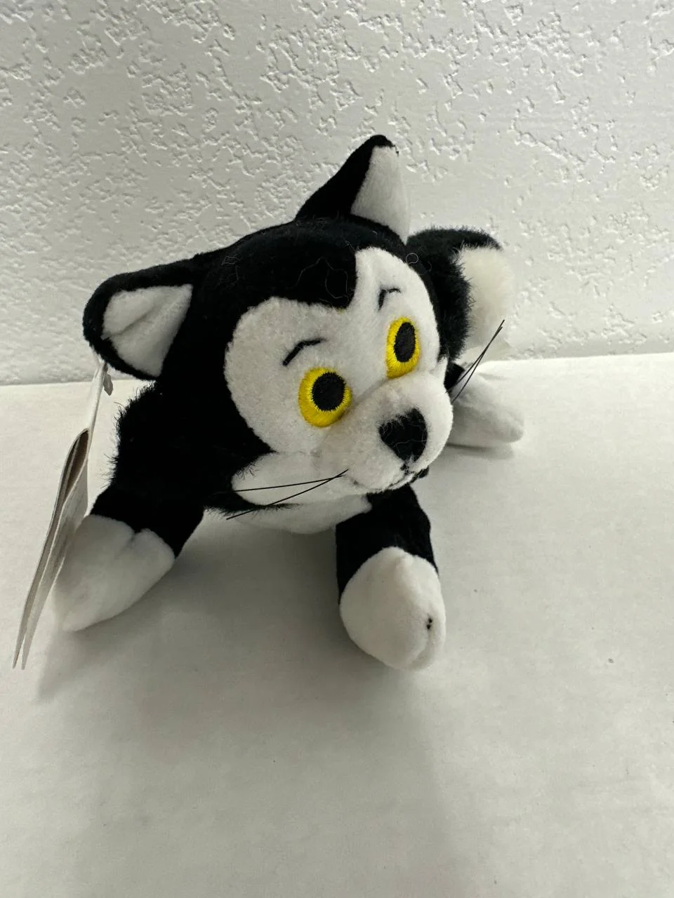
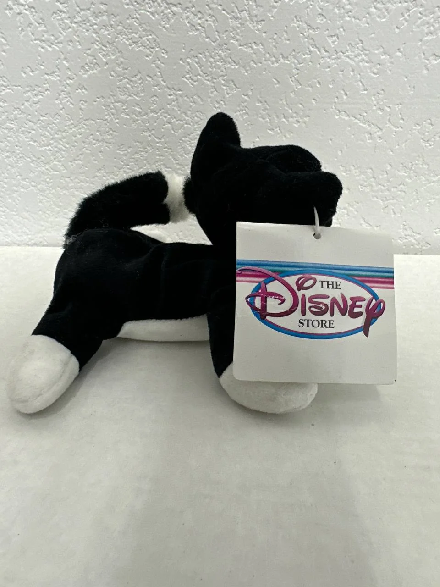

← Back to Cypress Flips



Plushie
Vintage Disney Store Figaro Mini Bean Bag Plush - Pinocchio / Minnie Mouse Cat
$15.00
Website direct local pickup price — marketplace listings may be higher.
Add a charming Disney classic to your collection with this vintage Disney Store Figaro Mini Bean Bag plush. Figaro first appeared as Geppetto's kitten in Disney's 1940 animated film Pinocchio and later became known as Minnie Mouse's pet cat, making this a fun crossover character for Disney collectors. This small black-and-white plush has bright embroidered yellow eyes, whiskers, a soft bean bag body, and the original Disney Store tag still attached.
Condition: Good vintage pre-owned/display condition with tag. Compared with a mint-condition plush, this Figaro shows normal age/display handling. There is visible lint/fiber pickup on the black and white plush areas, and small dark marks are visible on at least one white paw in the photos. The eyes, facial stitching, ears, tail, and attached Disney Store tag appear intact. No major tears, missing limbs, or heavy staining are visible from the provided photos.
Vintage Disney Store mini bean bag plushes can vary in price depending on character, tag condition, and cleanliness. Similar Figaro/Disney Store bean bag plush listings commonly appear in the mid-teens to higher range depending on tag condition and character demand, so $20 is a fair collectible price while still staying approachable. A great little add-on item for Disney fans, Pinocchio collectors, Minnie Mouse collectors, or anyone who loves Figaro's classic mischievous-cat charm.
Condition: Good vintage pre-owned/display condition with tag. Compared with a mint-condition plush, this Figaro shows normal age/display handling. There is visible lint/fiber pickup on the black and white plush areas, and small dark marks are visible on at least one white paw in the photos. The eyes, facial stitching, ears, tail, and attached Disney Store tag appear intact. No major tears, missing limbs, or heavy staining are visible from the provided photos.
Vintage Disney Store mini bean bag plushes can vary in price depending on character, tag condition, and cleanliness. Similar Figaro/Disney Store bean bag plush listings commonly appear in the mid-teens to higher range depending on tag condition and character demand, so $20 is a fair collectible price while still staying approachable. A great little add-on item for Disney fans, Pinocchio collectors, Minnie Mouse collectors, or anyone who loves Figaro's classic mischievous-cat charm.
Local pickup available in Cypress, CA.